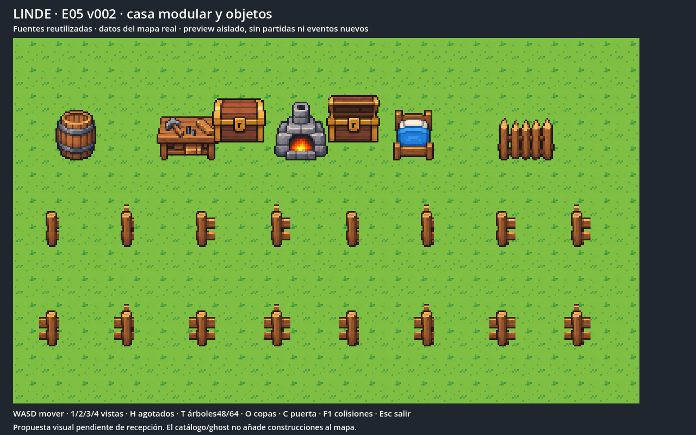
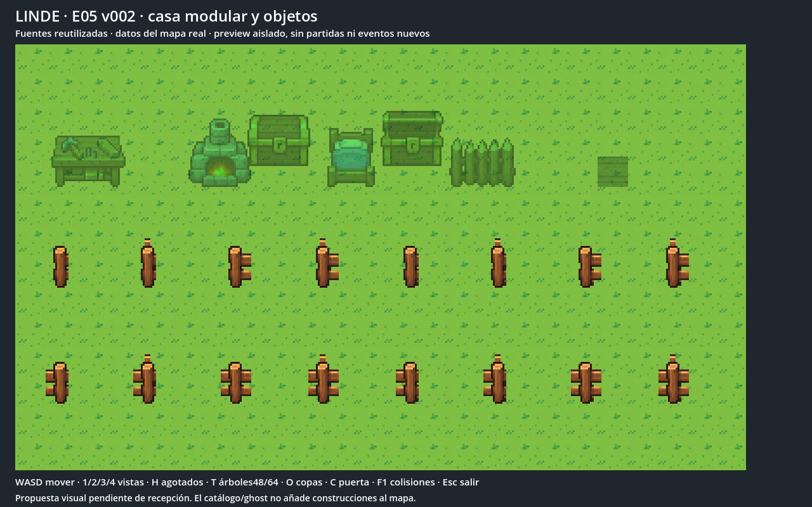
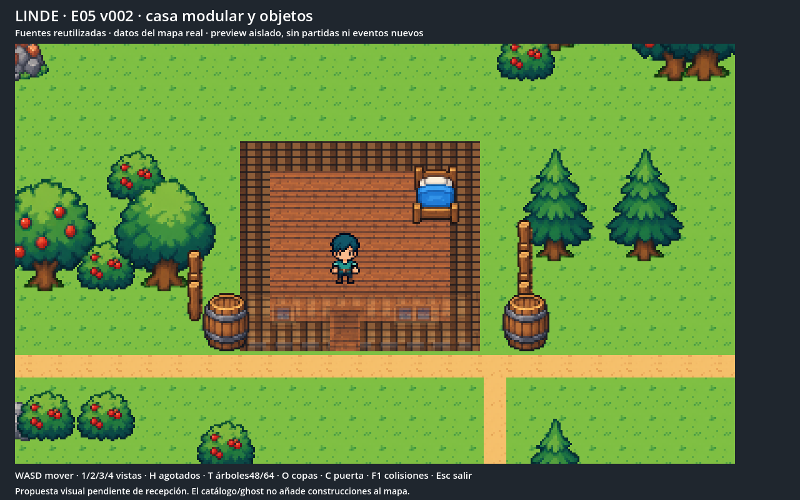
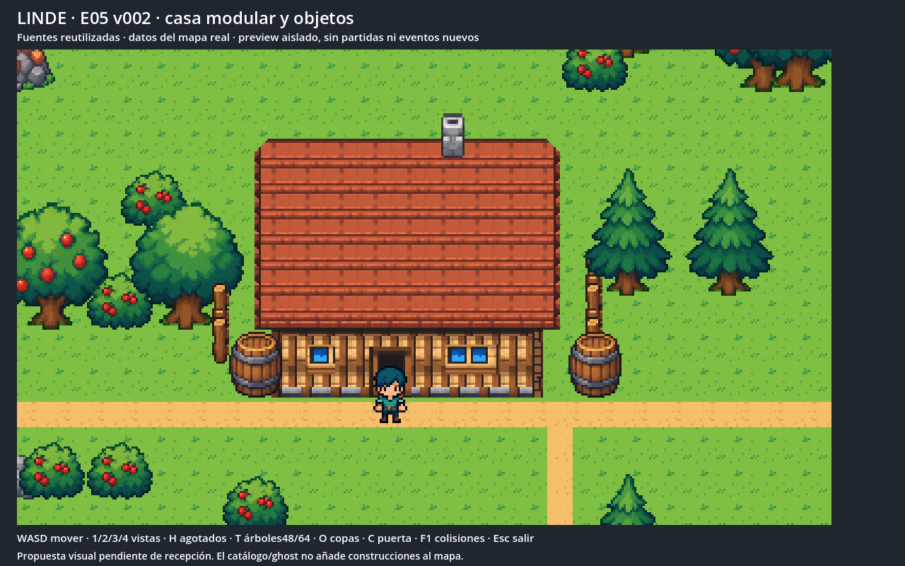
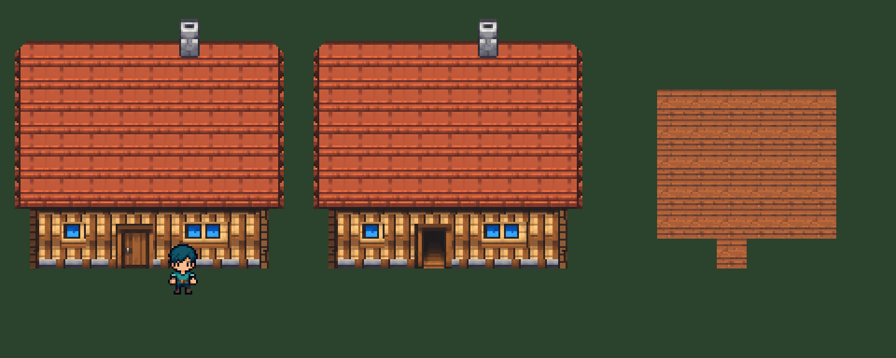
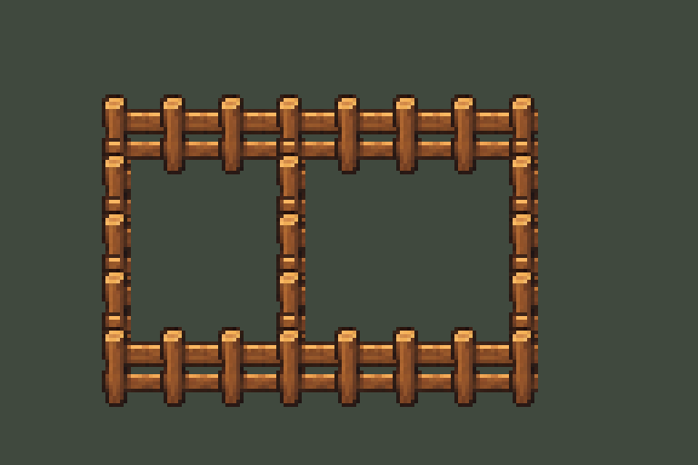

Casa modular alineada a la casa lógica de 8 × 7 celdas; puerta e interior; 16 conexiones de valla; cofres alineados y fantasmas de construcción por tinte.
Candidato validado técnicamente. Pendiente de aprobación visual e integración.
Informe y límites




